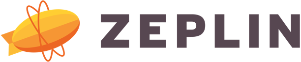
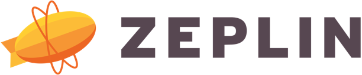

- Work
- About
- Contact

I’m a UX designer based in Atlanta, GA who made the transition into product and web design after working in marketing for a small ticketing software company in Charleston, SC. I had been interested in graphic design for a number of years and had even completed a graphic design internship at a small marketing agency in downtown Charleston. After observing the developers at our ticketing software company restyle our company's ticketing e-commerce flow for different customers' brands, I was convinced that the future of both marketing and graphic design was in building engaging web experiences and decided that I wanted to shift my focus to that. I left Charleston the following year in order to enroll in a full-time user interface design bootcamp in Raleigh, NC where I learned the basics of visual design and front-end web development.
A few months after completing the program at The Iron Yard, I moved to Atlanta, GA where I started working as an independent contractor for both an automotive marketing agency and a beginning SaaS startup. I was surprised by how similar working at the SaaS startup felt to working on a group project at The Iron Yard. Our application, which had about fifty users at the time, felt like something that had been created during a hackathon that was still being worked on a few weeks or months later. It was at UserIQ, the SaaS startup, that I started to truly understand the importance of user-centered design since it was clear that our product wasn't going to succeed if it didn't evolve to meet our users' needs.
Fortunately, UserIQ had a talented and intuitive Director of User Experience who knew how to shape the product to actually help our users. When I was offered the chance to stay on with UserIQ at the end of my contract, I happily said yes since I wanted the chance to continue learning how to create experiences that help users live happier, more productive lives on a team that was small enough to be able to change directions and try different things quickly and easily.
I left UserIQ to work as a UI/UX designer on the web development team at OneTrust two years later, but my time at UserIQ has continued to influence how I approach UX design in the time since. It was there that I learned the importance of shipping a product when it's useful, not necessarily when it's done—but with an emphasis on the word "useful" since product teams often ship features or services that aren't quite ready yet, but aren't quite valuable yet either. It was there that I also learned the importance of taking users at their word since I saw the effects of assuming that we, the product team, know what's best for our users more so than the users themselves. Although many UX professionals would disagree with me, I maintain the stance that users know what they need if you're willing to listen to them.
When I’m not creating wireframes or filling up walls with sticky notes, I like to take my golden retriever to bougie dog parks, read psychology books, and practice yoga. I’m actually working on completing a second Bachelor's degree in psychology (which has contributed to my knowledge about how to create user-centered designs) and am a yoga instructor at the CorePower Yoga studios in North Druid Hills and Buckhead.


 

Interested in chatting? Feel free to send me a message and I'll get back to you when I can.
Contact me